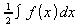

Die Brüche sind verglichen mit den Ausdrücken zu groß. Wie mache ich sie kleiner?
Wähle Format-Textmodus aus.
Das verändert die Formatierung der Formel auf die Art, dass Brüche und große Operatoren (wie zum Beispiel das Integralzeichen) kleiner dargestellt werden. Weiters werden die Grenzen von größeren Operatoren seitlich auf der rechten Seite des Operators angezeigt, als wie sonst oben und unten.
Beispiel: wird zu im Textmodus.
Diese Einstellung wird umgekehrt, wenn Sie wieder Format-Textmode auswählen.